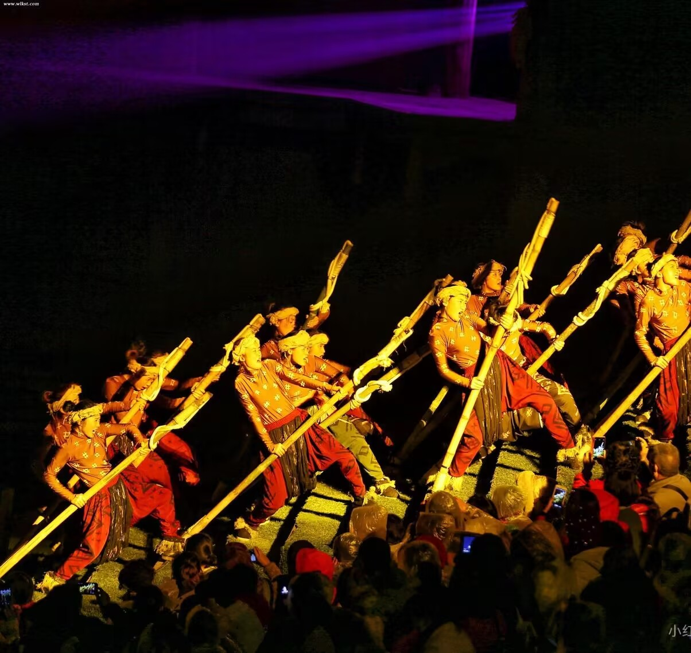
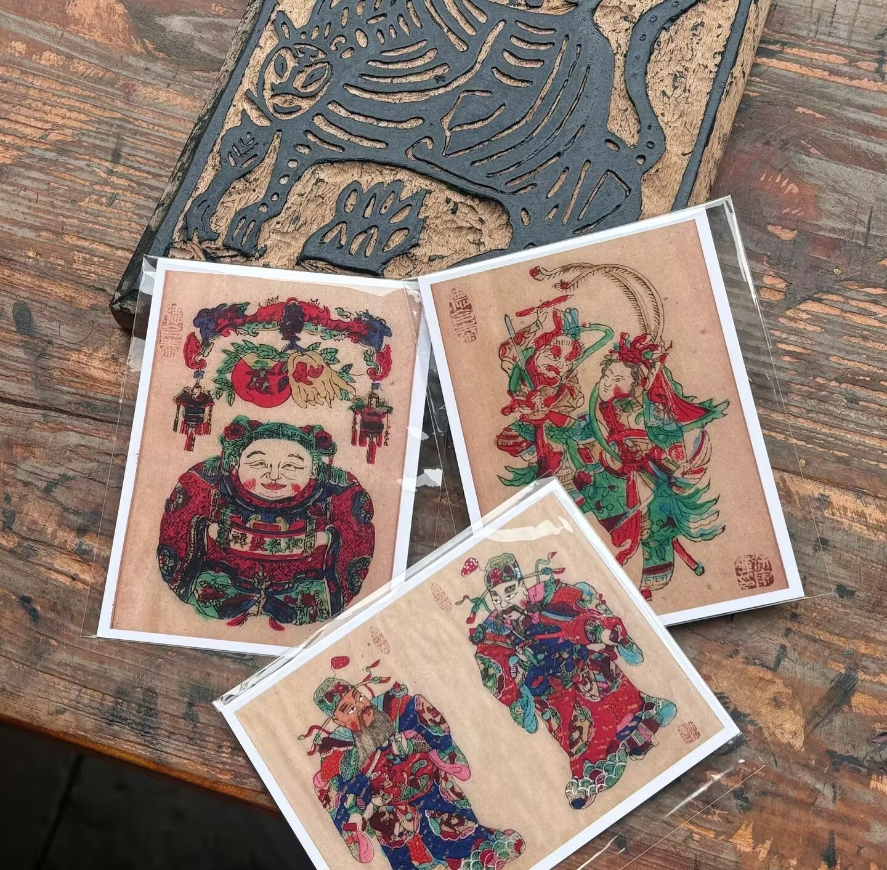

川江号子 —— 长江上的生命之歌
川江号子是长江上游船工们世代传唱的劳动号子，已有千年历史。在险滩密布的川江航道上，船工们用雄浑的号子统一节奏、鼓舞士气。号子声时而高亢激昂，时而低沉婉转，记录着巴渝人民与大自然搏斗的壮丽诗篇。2006年被列入国家级非物质文化遗产名录，成为重庆文化的重要符号。

川江号子是长江上游船工们世代传唱的劳动号子，已有千年历史。在险滩密布的川江航道上，船工们用雄浑的号子统一节奏、鼓舞士气。号子声时而高亢激昂，时而低沉婉转，记录着巴渝人民与大自然搏斗的壮丽诗篇。2006年被列入国家级非物质文化遗产名录，成为重庆文化的重要符号。
铜梁龙舞起源于明代，是重庆铜梁区最具特色的民间艺术。每逢春节和重大庆典，数十米长的巨龙在街头翻腾起舞，铁水打出的火花如流星般洒落，形成"火龙"奇观。铜梁龙舞以其气势磅礴、技艺精湛而闻名全国，被誉为"中华第一龙"，多次登上央视春晚舞台。

梁平木版年画起源于明代，与四川绵竹年画、天津杨柳青年画并称为中国三大年画。它以梨木雕刻版、手工拓印，色彩浓烈奔放，线条粗犷有力，题材多为门神、戏曲人物和吉祥图案。每逢春节，家家户户张贴年画祈福纳祥，这一习俗延续数百年，承载着巴渝人民对美好生活的朴素向往。2006年，梁平木版年画被列入国家级非物质文化遗产名录。